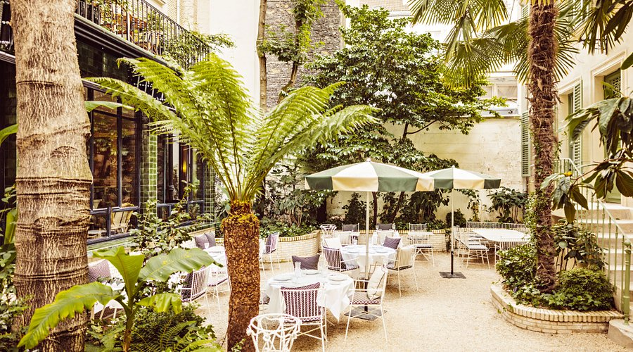
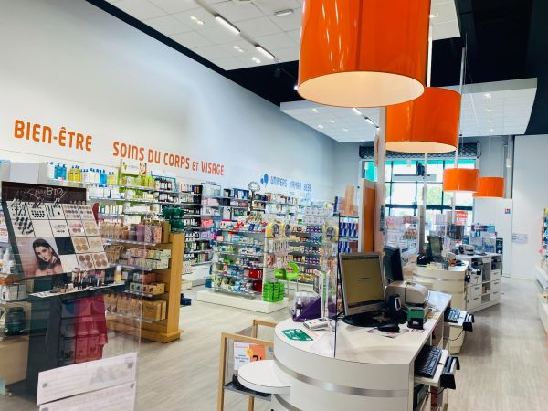

Expériences Professionnelles
Des expériences variées — de la data science à l'hôtellerie — qui m'ont appris l'autonomie, la rigueur et l'adaptabilité. Actuellement en recherche d'alternance en cybersécurité (sept. 2026 - juil. 2029).
- Analyse de données comportementales sur une plateforme de ~3,5 millions d'œuvres et ~1 million de comptes (acheteurs et artistes), à l'aide de SQL, Python et de méthodes statistiques.
- Classification sémantique avec BERT des descriptions d'œuvres et des biographies d'artistes pour améliorer le référencement et la recherche.
- Conception de dashboards interactifs avec Plotly/Dash et de cartographies de données pour les équipes produit, dev et communication.
- Recherche et implémentation de nouvelles stratégies statistiques pour améliorer la pertinence des recommandations.
- Conception de requêtes SQL complexes avec traitement des données directement dans la requête.
- Utilisation d'un linter pour garantir la conformité du code lors du merge des projets sur la plateforme centralisant les dashboards.
- Gestion, maintenance et optimisation de la base de données de la plateforme.
- Réalisation d'une étude ayant conduit à un changement sur la plateforme pour améliorer les ventes — proposition validée par A/B testing puis déployée à l'ensemble des utilisateurs.
- Service de ~75 couverts par service (salle de 40 places, 2 services par repas) dans un hôtel 4 étoiles parisien.
- Mise en place autonome de la salle, gestion du service en toute polyvalence au contact d'une clientèle internationale.
- Réalisation du service en chambre avec attention au détail et respect des standards de l'établissement.

- Développement du sens du travail en équipe et de la gestion du stress en période d'affluence.
Réceptionniste - Pharmacie de Piquerouge

Gaillac
7 mois
- Réception des livraisons, gestion de stock et mise en rayon dans une pharmacie de grande envergure (~2/3 des références en parapharmacie).
- Forte rigueur et rapidité d'exécution dans le respect des normes de traçabilité, avec un volume nécessitant depuis l'installation d'un robot de stockage.
- Sens de l'organisation développé au contact d'un environnement professionnel réglementé et à fort volume.